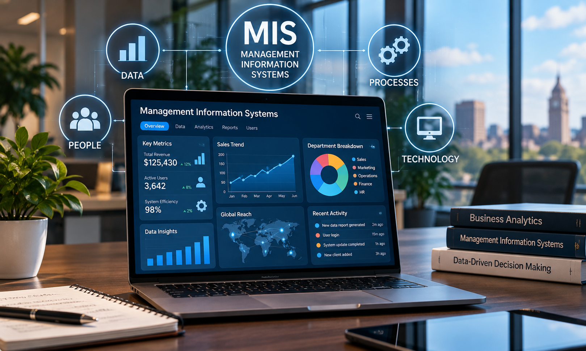

MIS & AI EthicsWebsite OverviewChristian Johnson, JJ Dobrosavljevic, David Fox, Carsten DunnOctober 26, 2026What is Management Information Systems? Original Website OverviewManagement Information Systems (MIS) are structured systems that take large amounts of data and manage it in a useful, efficient manner. Businesses frequently utilize MIS to help optimize company operations, thus maximizing their profits and overall quality of output that they are generating. Both information and technology are crucial parts of the decision-making process that companies go through because they provide a sense of support in background knowledge gained from interpreting raw data. With the rising of artificial intelligence (AI), businesses are now gaining even more support from technology and information because of AI's ability to seemingly make decisions for itself, as well as provide quick and accurate assistance on any topic you could think of. With the rise of such a new and powerful gadget, AI ethics and cybersecurity are growing in significance as people try to figure out how to use this new technology responsibly. From our website, visitors will gain a deeper insight into our opinions on how to responsibly use AI as it continues to grow, types of pitfalls of cybersecurity including a famous event, what we have learned in completing this research project, and more. AI-Polished Website OverviewManagement Information Systems (MIS) are organized systems that collect, process, and manage large amounts of data to make information more accessible and useful. Businesses rely on MIS to improve operational efficiency, increase profitability, and enhance the quality of their products and services. Information and technology play essential roles in business decision-making by transforming raw data into meaningful insights that help organizations make informed choices. As artificial intelligence (AI) use it to automate tasks, analyze complex information, and receive rapid assistance with a variety of challenges. However, the growing influence of AI also increases the importance of ethical decision-making and cybersecurity as organizations work to use emerging technologies responsibly and securely. Through our website, visitors will explore responsible AI usage, common cybersecurity threats, a significant historical cyberattack, and the knowledge our group gained while completing this research project. Important MIS Topics
|